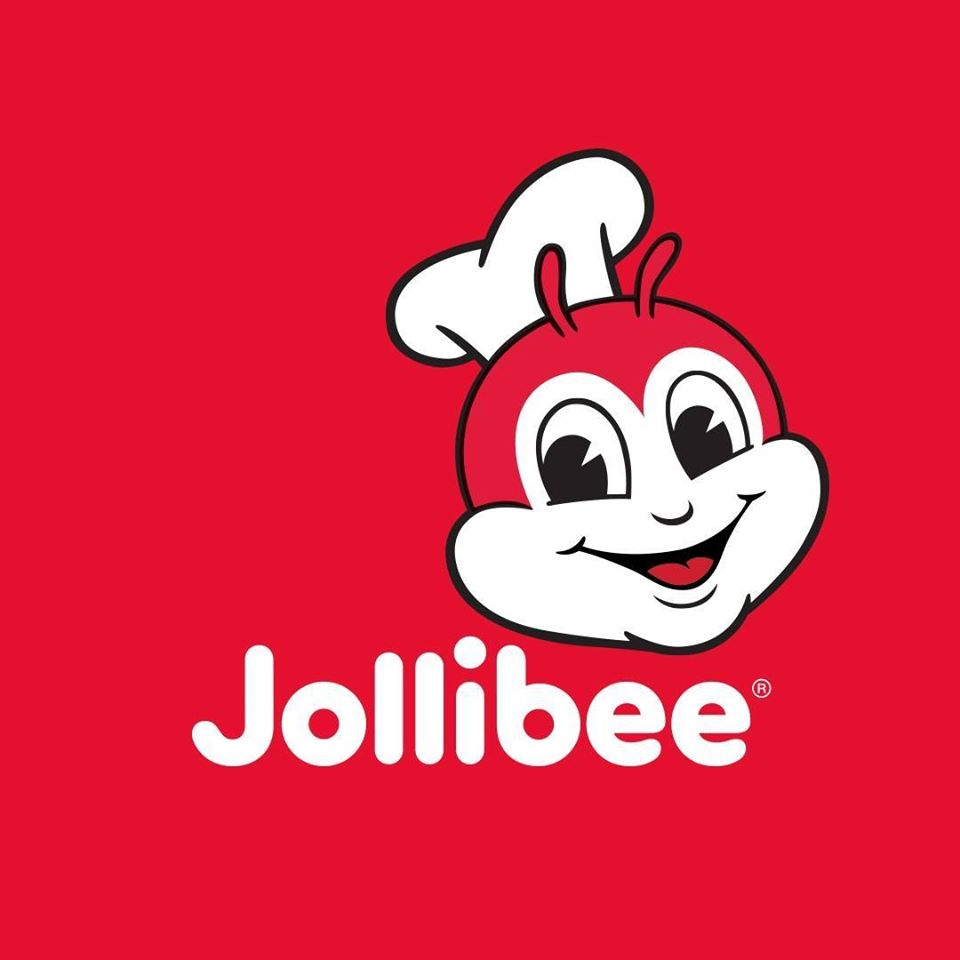
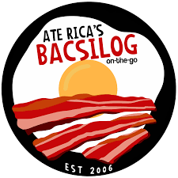
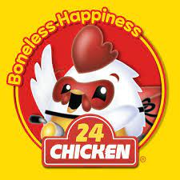

Establishment
-

Mcdonalds
McDonald's is a global fast-food giant known for its iconic golden arches, serving up a wide range of classic burgers, fries, and beloved menu items that have become synonymous with convenience and familiarity.
-
Colonel Curry
Colonel Curry offers a tantalizing array of flavorful curries that take taste buds on a journey with their rich and aromatic blends of spices, ensuring a satisfying and memorable dining experience.
-

Jollibee
Jollibee is a beloved fast-food chain that captures the hearts of customers with its iconic fried chicken, sweet spaghetti, and a variety of Filipino-inspired dishes, creating a memorable and delightful dining experience.
-

Ate Rica’s Bacsilog
Ate Rica's Bacsilog serves up a delightful combination of crispy bacon, garlic fried rice, and a perfectly cooked sunny-side-up egg, delivering a delicious and satisfying breakfast experience.
-

24Chicken
24Chicken is a fast-food haven for chicken enthusiasts, offering a variety of mouthwatering dishes bursting with bold flavors.